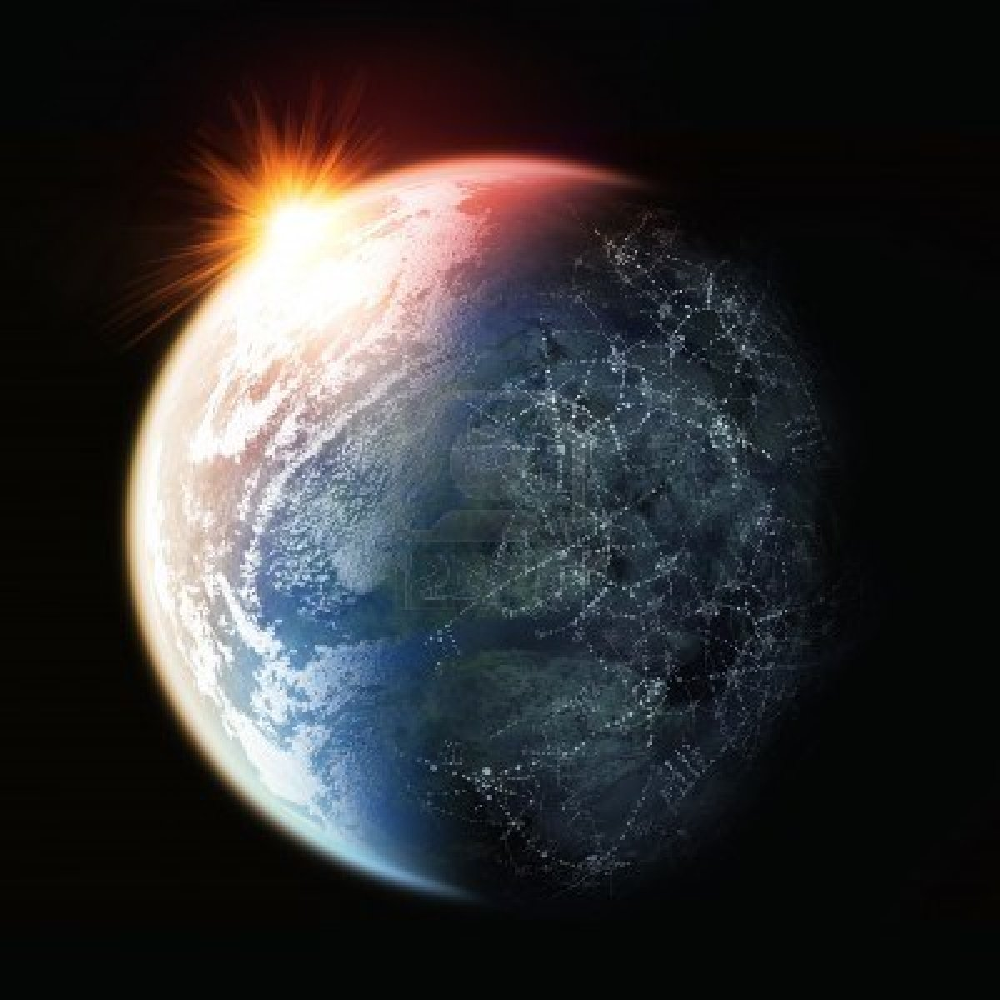

hello world!!!
A few facts about the world we live in.

Terra Il terzo pianeta del Sistema solare in ordine di distanza dal Sole.
La parte compatta, solida, della superficie terrestre, che emerge dalle acque, oppure la parte superficiale, esterna, della crosta terrestre, intesa come suolo, o come strato d’una certa profondità.
about the earth:
-
- silicio (15,1%)
- magnesio (13,9%)
- zolfo (2,9%)
- calcio (1,5%)
- calcio (1,5%)
- alluminio (1,4%)
Gli studiosi del Basso Medioevo,sostennero la sfericità del nostro pianeta con argomenti per lo più di questo genere:
- Il Sole, a mezzogiorno, indica il sud qualunque sia il punto di osservazione: se la Terra fosse piatta, non sarebbe così;
- l'ombra proiettata dalla Terra sulla Luna, durante un'eclissi parziale, è un arco di cerchio;
- la parte che per prima scompare di una nave all'orizzonte è la chiglia.
| NOMI |
RAGGIO |
temperatura
media |
| marte |
3,403 km |
-46° |
| venere |
6,052 km |
462° |